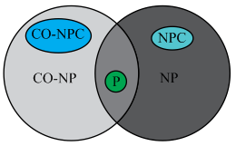

Consider a circuit of size  .
.
Describe a circuit with the variables  where
as
follows:
where
as
follows:
Since the total number of variables and
is
,
the size of the circuit described in (1) will be .
Refer chapter 34, section 34.4 of textbook for the theorem 34.9.
To show that CIRCUIT–SATSAT, the theorem reduces any instance of circuit satisfiability to an instance of formula satisfiable in polynomial time.
Consider, if the theorem uses non-polynomial time straightforward reduction.
If there are variables,
then  assignments
are possible.
assignments
are possible.
The problem described in (1) has variables.
So, the total number of possible combinations will be .
Hence, the size of the Boolean formula that can be constructed
using variables
is .
By using induction it can be proved that the formula describing
the variable and
forming a circuit of size has size at
least .
Since the theorem uses non-polynomial time straightforward
reduction, the size of the formula can’t be reduced and the size
remains .
Therefore, for a circuit of size
, the size of the formula is exponential in
.
Definition of 3 CNF-SAT: - It is known as the 3-Conjuctive Normal Form Satisfiability.
A literal in a Boolean formula is the occurrence of a variable or its negation. A Boolean formula is in CNF if it is expressed as a conjunction (AND ) of clauses each of which is the disjunction (OR) of one or more literals. 3 CNF means that each clause has exactly 3 literals.
For example:
As per the Theorem 34.10
• 3-CNF-SAT NP [ Proof
same as SAT]
NP [ Proof
same as SAT]
• 3-CNF-SAT NP-Hard:
SAT3-CNF-SAT.
Break the reduction steps into 3 steps as follows:
Step 1:
• Construct a “binary parse tree” for the input formula
 .
The tree corresponds to the formula . The tree
corresponds to the formula:
.
The tree corresponds to the formula . The tree
corresponds to the formula:
• If the formula contains the AND or OR of several literals, then it is guaranteed that that the internal nodes has just one/ two children by the parenthesis and associativity.
• The binary tree can be interpreted as a circuit for the
computation of . In order
to obtain a 3-CNF expression, introduce a variable
corresponding to the output of each internal node.
• Rewrite as AND of
the root variable and a conjuction of clauses corresponding to
becomes:-
 is a conjuction of clauses each with
atmost three literals .
is a conjuction of clauses each with
atmost three literals .
Change such that each clause has exactly 3 literals connected with OR’s
Step 2:
• Change each clause into CNF. Construct the truth table for each . Each row of the truth table consists of possible assignment of variables of clause, together with the value of the clause under that assignment. The truth table is as follows:
|
|
|
||
|
1 |
1 |
1 |
0 |
|
1 |
1 |
0 |
1 |
|
1 |
0 |
1 |
0 |
|
1 |
0 |
0 |
0 |
|
0 |
1 |
1 |
1 |
|
0 |
1 |
0 |
0 |
|
0 |
0 |
1 |
1 |
|
0 |
0 |
0 |
1 |


• Using the table entries that evaluate to zero, build a formula in DNF equivalent to .
The DNF formula equivalent to is:
• Use Demorgan’s law to get the CNF formula:
In the above example, convert the clause into CNF and the
CNF formula is as follows:
which is
equal to the original clause .
Convert all other formulae into CNF. Each clause has no more than 3 literals corresponding to two input and one output associated with the nodes of binary parse tree for .
Step 3:
• Modify so that all its clauses have exactly 3 distinct literals.
Perform this transformation in several steps.
Modify each clause of after introducing new variables p and q.
o If has 3 distinct literals: do nothing.
o If has 2 distinct literals: . Replace by which is equivalent to
o If has 1 literal: . Replace by
.
Now, show that the 3-CNF formula of is
satisfiable, if is
satisfiable .
Examine the 3 reduction steps as follows:
Step 1: The binary tree circuit is another representation of the formula. It will be satisfiable if the formula is satisfiable. Apply the induction proof on the number of clauses.
Step 2: Demorgan’s law is used to produce a formula which
is algebraically equivalent to the original one, that is, .
Step 3: The new formula is effectively equivalent to the one produced in the Step 2, since a formula algebraically equivalent to that produced in Step 2 is produced by the assignment of the new variables p and q.
The 3-SAT is a satisfiability problem where the Boolean formula has only 3 literals or variables ORed to each other in each clause that are ANDed. The output of each of the clauses should give the output of the whole problem as 1.
It means that we should choose the values of the literals or variables used in the formula so that the output is 1 then only the formula is satisfiable.
The 3-CNF SAT is a SAT problem with 3 such literals as variables, and 2 CNF SAT is a SAT problem with two literals as variables.
For the proof of 3-CNF SAT to be NPC, consider the following 3-CNF SAT given in equation form by using 3 literals as:
Now for each clause we need to draw a parse tree and find the corresponding truth table as for example the first clause is been described as follows.
We draw a parse tree and treat the connectives as nodes and the leaf nodes as the literals:
Corresponding to the above parse tree the result of the expression is derived and represented as:
The truth thus derived for the 1st clause that is the truth table for is as:
|
0 |
0 |
0 |
1 |
|
0 |
0 |
1 |
1 |
|
0 |
1 |
0 |
0 |
|
0 |
1 |
1 |
1 |
|
1 |
0 |
0 |
0 |
|
1 |
0 |
1 |
0 |
|
1 |
1 |
0 |
1 |
|
1 |
1 |
1 |
0 |
We know that the length of the parse tree is the total height traversed, that is, of the form where n is the number of leaves. Now this is of the form which is a non- polynomial form.
So to find out the total value of the formula we need to perform the same task for every clause. This results in a non-polynomial degree.
The 3 CNF form is:
Hence by taking the values of the truth table the number of values increases creating a non polynomial reduction. So this strategy does not yield a polynomial time reduction.
Determining Whether a Boolean Formula is a Tautology is Complete for co-NP
Boolean Formula: It is the logic or a combination of the variables as inputs and the different binary or unary operators. It is a form of the algebraic expressions that can have only two possible forms or results as either true or false. It is a combination of the operators such as OR, AND, NOTand many more.
For example: Consider the Boolean formula given below:
is a valid Boolean formula and P is not an example of a valid Boolean formula.
The result obtained is either true or false, 0 or 1 depends mainly on the type of operators and the input variables of the Boolean formula or expression.
Tautology: It denotes a compound preposition or a formula which uses the combination of different input variables to generate a true value for all the possible combinations. It is one of the simple examples of the NP- complete problem. Thus, it is a way or form of achieving a true or 1 value in a predicate calculus.
For example: Consider the Boolean formula or expression which is a tautology as shown in the truth table given below:
As the value of the Boolean formula is coming out to be 1, so it can be stated that this is a tautology. In case of a Boolean formula, it can be considered as a tautology or unsatisfiability depending on the values provided to the input variables. The formula will be a tautology in case when the formula evaluates to 1 or true.
In other words, it can be said that whenever the variables are assigned or provided with the values in the form of true or false this operation always yields a result or an outcome as a True statement. This is similar to the problem of determining or finding that whether at least one assignment of such type is present or not. Thus, in order to verify whether a Boolean formula is a tautology or not, certification in the form of Boolean variables can be used.
Hence, this proves that .
Co-NP: Co-NP stands for NP problems that are NP complete. Co-NP complete represents the class of problems or languages whose complement belongs to NP.

Consider be a Boolean
formula constructed from the following terms stated below:a.
The Boolean input variables  ;
;
b. OR’s
c. AND’s
d. Negations
e. At most, one pair of Parentheses present in the Boolean formula per Boolean connective which are OR’s, AND’s and Negations. The Boolean formula will be a tautology if and only if it outputs to 1 for every assignment of 1and 0 for all the input variables.
As it is known that, co-NP belongs to the set of languages, which follows that L-complement; further if, it can be shown that TAUTOLOGY-complement, then that will prove the statement or fact that. Set not TAUTOLOGY=TAUTOLOGY-complement.
Now, it is known that a language L belongs to NP, only if there exists two-input polynomial-time algorithm A and constant c so that:
There exists a certificate  with such
that
with such
that
Now, try to find for each formula x, to find out if, try all possible combinations of 0 and 1 assignments to input variables unless any one assignment finds out that comes to be FALSE.
Hence, to know whether a given formula belongs to not
TAUTOLOGY, it is required to use a certificate of
lengthof at least
for
algorithm A to be verified for all the combination possible
made from 0 and 1 for all k input variables of x.
Therefore, no certificate y with containing c constants can be done for an algorithm to check it up for whether x is accepted or not.
Hence, and thus, it is proved that.
Disjunctive Normal Form (DNF):
A Boolean formula that is composed of OR of clause of ANDs is known as DNF.
The Boolean formula of the form DNF is satisfiable if any of its clause can be evaluated as 1.
For some variable  such that
the clause contains
irrespective of the Boolean value will be
evaluated to 0. Otherwise, for some assignment of values 0 and 1
the clause will be evaluated to 1.
such that
the clause contains
irrespective of the Boolean value will be
evaluated to 0. Otherwise, for some assignment of values 0 and 1
the clause will be evaluated to 1.
The following is the algorithm to determine the satisfiability of Boolean formula in DNF:
Algorithm DNF–SAT  :
:
1 for each clause of
2 for variable such that
3 if exists in the clause of
4 retrun false
5 else
6 retrun true
7 end for
8 end for
Running Time Analysis:
• Consider  be the
total number of clauses and each clause has at most
be the
total number of clauses and each clause has at most  (literals)
variables in .
(literals)
variables in .
• The loop in the line 1 and its block in the lines 2–8 runs at
most times.
• The loop in the line 3 and its block in the lines 2–7 runs at
most times.
• The block in the lines 3–6 takes at most time as the
existence of in the
clause will take
steps.
• So the running time of the algorithm is .
• Hence the time complexity of the algorithm DNF–SATis .
Therefore, the problem of determining whether the satisfiability of Boolean formulas in DNF form is polynomial-time solvable.
The language for formula satisfiability problem is SAT=.
Let A denote the polynomial time algorithm which returns 1 if the input x is a satisfiable formula and 0 otherwise.
In addition, assume has at most
n variables denoted as .
The following procedure can be used to find satisfying assignments in polynomial time:
• Apply the polynomial time algorithm A on the Boolean formula
to
determine whether is
satisfiable or not. If it is not satisfiable return 0 else
continue.
• Initialize a variable, i =1.
• Let the variable then the
condition that is a Boolean
formula with n-i variables is satisfied.
• Apply the algorithm A to check the satisfiability that is,
there must be an assignment of that
satisfies .
• Replace the variable in Boolean
formula by the
recorded value from the previous step and then increment the
variable i by 1, repeat the previous step until i = n.
• Return the recorded assignments for all the variables .
• Since, the algorithm A runs in polynomial time, so the above procedure runs in polynomial time.
2-CNF-SAT- PROBLEMS
A Satisifiability problem represents the class of problems in which the formula is passed as an input having the conjunction of clauses. A Boolean formula in which each clause is a disjunction of literals containing the variables having the values either as true or false is known as the CNF (Conjunctive Normal Form). In case of Boolean formulas, CNF is mainly used for describing the clause set representation.
For Example: The Boolean formula given below is in Conjunctive Normal Form (CNF)
Satisfiability problem can be expressed and known in various types or forms such as CNF SAT, k-CNF-SAT, MAX k-CNF SAT where.The word 2-SAT refers to 2-satisfiability which refers to that class of problem having a group of two-valued variables (that is Boolean or binary) which satisfies the constraints on the variables. The instances of 2-satisfiability problem can be expressed as 2-CNF (Conjunctive Normal Form) in which the numeric value 2 denotes the number of terms per clause.
If a collection of sub-expression called clauses, that are combined or arranged using AND contains at most two literals in case of a Boolean formula then a variant of SAT problem is known as the 2-CNF-SAT PROBLEM, which is a well-known restriction of the CNF-SAT. This problem can be easily explained using the Boolean expression having some restriction in the form of a conjunction of disjunction which basically denotes AND of OR’S.
Consider the two arguments for each disjunction operation (or operation) which may be a variable or its negation. The word term and clauses will be used frequently in this problem which is defined as,
Terms: It is the appearance of variables and their negation.
Clauses: It is the pairs of terms in the disjunction.Consider the input having a Boolean formula  in the
conjunctive normal form in which each clause contains two literals
(one is variables and the other is its negation) and the size of
the formula is defined by the number of clauses. The clause
in
has the variables m and n and the literal is set in
such a way that m appears to be 0. The value of n
must be fixed in order to have the clause to be true.
in the
conjunctive normal form in which each clause contains two literals
(one is variables and the other is its negation) and the size of
the formula is defined by the number of clauses. The clause
in
has the variables m and n and the literal is set in
such a way that m appears to be 0. The value of n
must be fixed in order to have the clause to be true.
After fixing the value of n it may be possible that a case arises when any other clause containing n requires the other value of literal to be fixed. And in this way there will be the requirement of the exchange operation.
Now, if during the process a clause is encountered, it signifies that the decision that was taken or considered for the variable m does not proceed towards the Satisifiability.
So it is required to look or opt for an opposite choice for
variable m. And if the clause has been
found again then it is sure that the Boolean formula is not
satisfiable. Thus, whole process will be repeated till all the
variables from the Boolean formulaare removed
or eliminated.
Algorithm:
for each variable v
if a path from and from
return “rejection”
else
return “accept”
As per the above algorithm the Boolean formula will be satisfiable only in a case that there should not be any pair of complementary literals present in the same strongly connected graph. In other words, it can be said that an interpretation will exist for the formula if and only a variable and its negation are not a part of a strongly connected component. The algorithm first determines that for each variable v if there is a path from and from.The rejection is done if we have a success for any of these tests, otherwise the acceptance is done.
Above explanation implies that is solvable in polynomial time and thus, it is polynomial time decidable.